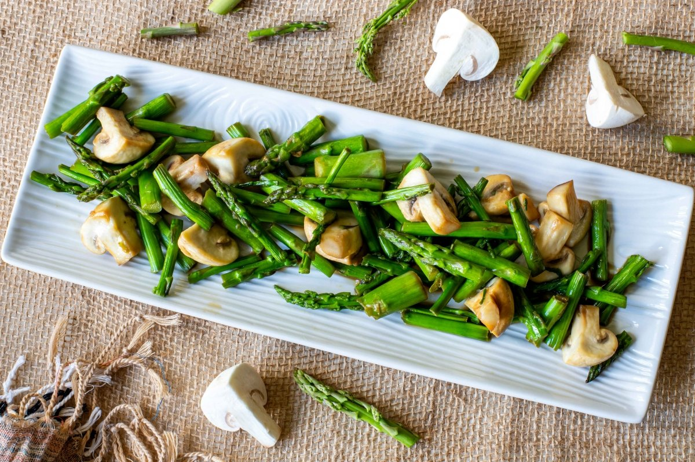
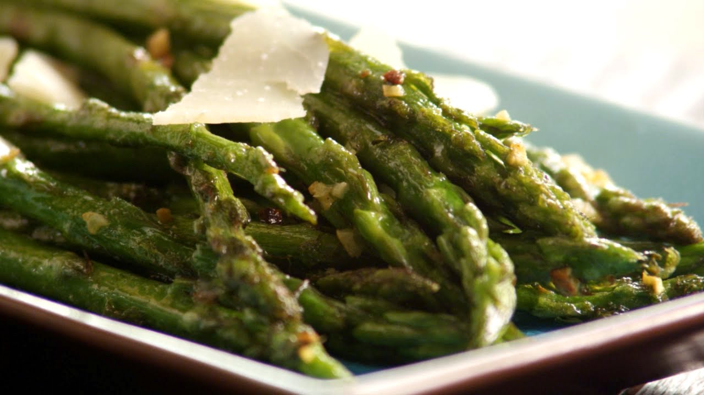

Como preparar un plato de esparragos salteados:

Indice:
- Ingredientes.
- Paso a paso.
- Resultado Final.
Ingredientes:
- 1 manojo de espárragos
- 50 gramos de jamón serrano en trocitos
- 3 unidades de huevos
- 1 chorro de aceite de oliva
Paso a paso:
- Para preparar los espárragos salteados, corta las puntas de los espárragos, la parte más dura. Ahora, lávalos y corta la parte más tierna. Corta el resto en trozos.
- Coloca una sartén con un poquito de aceite y saltea las puntas de los espárragos durante 5 minutos. Sácalas y resérvalas.
- En esta misma sartén, añade el resto de los espárragos y deja que se cocinen por unos 10 minutos o hasta que queden tiernos. Cuando veas que están listos, añade los trocitos de jamón y algunas puntas de los espárragos que ya tenías previamente cocinadas.
- A continuación, bate los huevos con un poco de sal y añádelos a la sartén donde estén cocinándose los espárragos con el jamón. Remueve sin parar hasta que los huevos queden casi cuajados o como te gusten. ¡Listo! Tus espárragos salteados quedarán deliciosos y podrás servirlos para disfrutar de inmediato.
¡Los esparragos salteados ya están listos!
Resultado Final:
